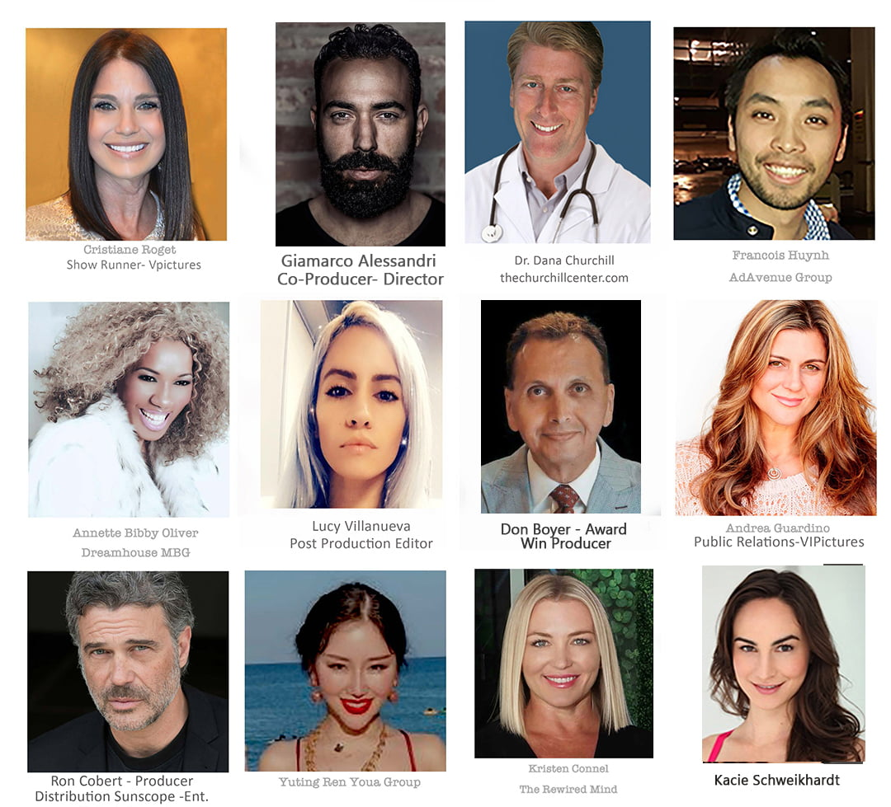

The Churchill Center
DOWNLOAD PRODUCTION BREAKDOWN PDF
Dr. Dana Show & Tell, An Episodic Tv Pilot Is Set To Prove Not All News Is Gloom and Doom Or Fake

Read moreShow less
For Immediate Release: “Dr. Dana Show & Tell” takes a “Forward Thinking Approach in a Wait & See World”. By Sr. Correspondent, Cristiane Roget, AdAvenueGroup-Forbes Magazine
Los Angeles/CA Dr. Dana Churchill, Founder of the Churchill Center in Southern California is breaking with convention in the daytime TV Talk Show genre. As the Executive Producer of the soon-to-premiere Dr. Dana’s Show & Tell, sees the program as a game changer. To date ‘talk tv’ is rife with toxic confrontation, fringe facts and salacious predictability.
The episodic docu-series is created in part by award-winning ‘Team Boyer’ Productions (‘Beyond the Secret – The Awakening’) and co-directed by Gianmarco Alessandri of SineQuaNon Pictures. The pilot is slated to commence principal photography October 15th through the 17th. at the pop-up Churchill Center Studio in Arcadia, California.
Riding a raft of positivity, the 5-minute segments are co-produced by Don and Melinda Boyer, award-winning Vector International Pictures (vipictures.com) with postproduction to unspool at Voxx Studios in Glendale, California. Voxx is the home of the critically acclaimed indie feature ‘So What’s Freedom’ by distinguished director, Andrei Zinca. The film is based on mid-century, historical fact that posits that “looking back points us forward”.
Taking a page out of the New York Times Best Seller “Blessed Unrest”, authored by Paul Hawkins, environmentalist and leading proponent of ecological reform, Hawkins postulates that we as humans underestimate our capacity to overcome our historical ignorance and devastating mistakes. “Going forward we are fine tuned to evolve,” stated Dr. Churchill. He provides that extra nudge to live the highest quality of life. “Evolution is optimism in action. The collective result is intoxicatingly beautiful, laden with oddities and surpassingly brilliant, yet no agent is in control,” Hawkin’s concurs. The core message of the Dr. Dana Show & Tell is ‘Evolution and health rises from the bottom up as does hope.
A new narrative founded on positivity is being crafted. Dr. Dana Show & Tell takes a deep dive into ‘Beauty Within and Out’, ‘Nutritional Longevity’, ‘Treating the Root Cause of Disease, Not the Symptoms’, ’Financial Intelligence’ and ‘Natural, Mindful Lifestyles’. Each episode invites distinguished guests to inspire and engage the audience with demonstrations, bits and bytes of distilled knowledge that encourage us to ‘lean into the light’.
Presided over by Dr. Dana Churchill, he is renowned among his patients as a distinguished practitioner of break through medical innovations and time-tested cures. His treatments are rooted in health care rather than ‘sick’ care. A charismatic ‘Golden Boy’ steeped in humility; Dr. Dana rarely speaks of his past. He does wax poetic about his early iteration as a fine dining chef living the high life from Paris to New York and beyond. This was long before the handle ‘celebrity chef’ existed. ‘Celebrity Chef ‘was an oxymoron, quips Dr. Dana. “Back when I sported a toque and a side towel, famous chefs were slicing and dicing in the Kitchen NOT preening in the front
Page 2 Dr Dana Show & Tell, continued
of the house,” he laughs with shrug. He was a decade too soon to catch the shot at fame that Puck, Gordon Ramsay, and Bourdain seized upon.
He admits on the first episode of Dr. Dana Show & Tell that he was in his youth on a death-defying, downward spiral. A life of debauchery led him to a personal catharsis. This game changing epiphany placed him on the path to become one of California’s most esteemed healers and a spokesperson advocating for truth, love, and compassion. As a Doctor of Functional and Naturopathic Medicine he proves time and again that optimal health and wellbeing is achievable at any age! Simply said, Dr. Dana Churchill is the ‘real deal’.
Dr. Dana Show & Tell features engaging subjects that will assure audiences at home and in studio, that a life of dignity and stress-free happiness is within reach for all! “It’s only natural”, Dr. Dana is fond of saying.
He will be joined by celebrated guests sharing interactive, immersive, and vetted stories that play out in-studio and in lush and verdant California habitats. ‘Show and Tell’ demo’s focus on captivating current events that are meant to inspire dialogue rather than confrontation, subject that are like a rejuvenating breath of fresh air.
Channel 17 KDOC on Spectrum Basic Cable, Amazon, Hulu, Roku TMW Media and NTD TV are in the mix to distribute the upbeat, ‘real-life’ series. Ron Cobert, (Sunscope-Entertainment) is on board to expand the audience base, increase revenue streams, oversee licensing and syndication of the show.
Dr. Dana explores with his guests natural and effective solutions to ‘dis-ease’. Dr. Dana Show & Tell promises compelling subject matter that entertains and enlightens while restoring grace, justice and a ‘Joie de vivre’ in a troubled world.
TRAILER.
Cristiane Roget – Sr.Correspondent
AdAvenue Group – Forbes
310-220-9118 Tel/Text
press@vipictures.com
@ecoworldluxury